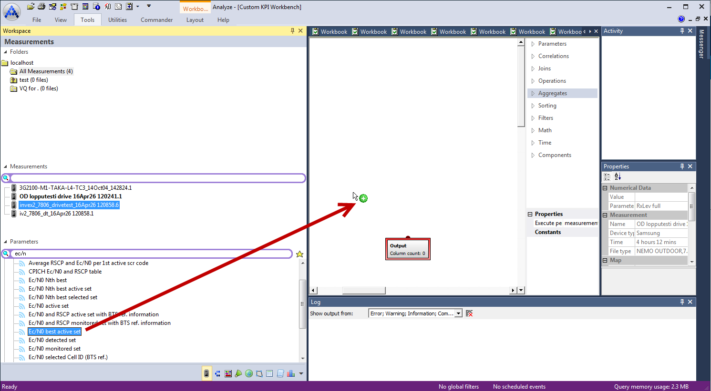
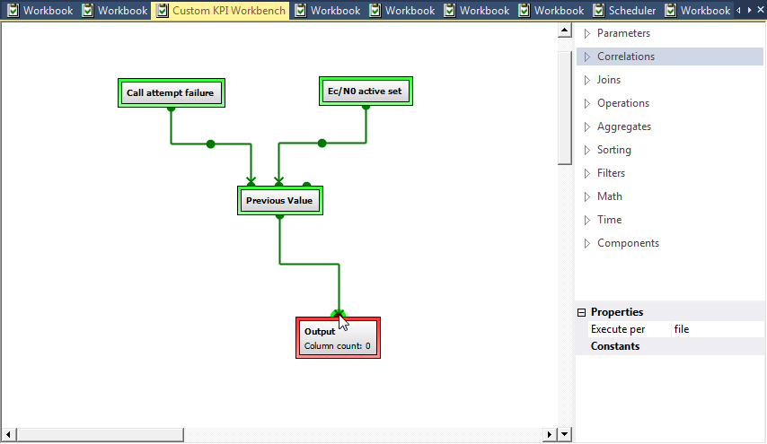
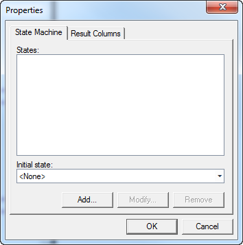
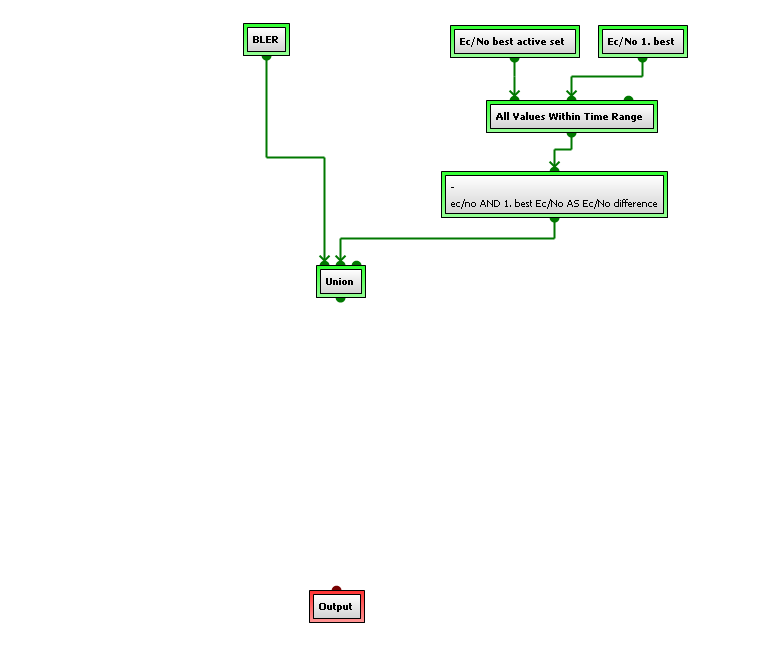
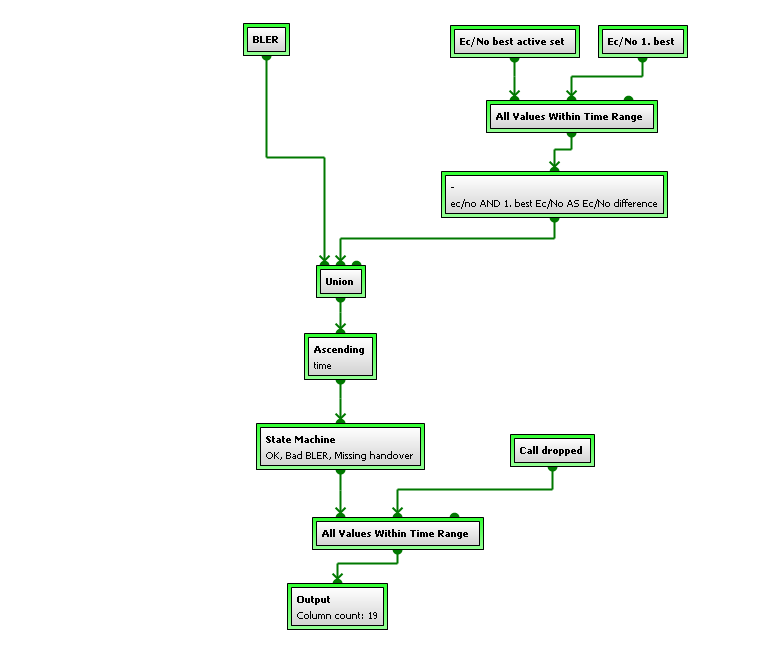
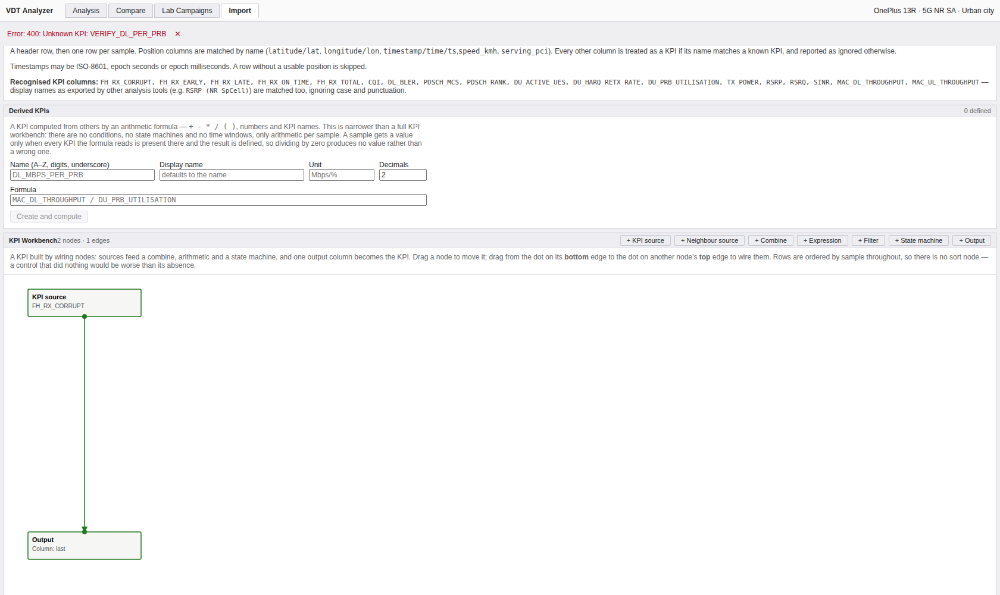

③ KPI Workbench
먼저 밝혀 둘 것 — 그리고 이 자리에서 한 번 정정합니다
우리는 웹에서 주운 nemo-analyze_kpi-workbench.png(774×717)를 보고 노드 그래프를
설계했습니다. 이 브리프의 첫 판에서 저는 "그 그림은 매뉴얼 p405의 상태 흐름도였다"고
적었습니다. 틀렸습니다. 근거가 크기가 같다는 것뿐이었는데,
이 매뉴얼에는 774×717 그림이 최소 셋 있습니다(p405 · p411 · p424). 픽셀로 비교하니 셋 중
어느 것과도 일치하지 않았습니다.
그림을 실제로 열어 보니 UC27의 완성 노드 그래프였습니다 — 아래 p425 그림과 내용이 같고 자른 높이만 다릅니다.
그래서 결론이 반대로 바뀝니다. 우리는 부분 그림이 아니라
완성된 그래프를 보고 설계했고, 거기 있던 Union과
Ascending time도 보았습니다. 정렬 노드를 넣지 않기로 한 판단은 그것을 보고
내린 것입니다. 구조 판독은 정확했습니다 — 노드 배치, 연결 방향, 상태 이름
(OK / Bad BLER / Missing handover)까지.
틀린 것은 여전히 있습니다. 그림에서 읽을 수 없는 것을 추측한 부분입니다 — 각 노드가 무엇을 출력하는지. 아래가 그 목록입니다.
1. 이 도구가 존재하는 이유 p332
매뉴얼은 "SQL vs. KPI workbench" 절에서 존재 이유를 직접 밝힙니다. 워크벤치는 SQL로 불가능한 두 가지를 위해 있습니다.
- 셋 이상 테이블의 시간 상관. 두 테이블은 시간 기반 조인이 되지만
"with three or more tables the task becomes impossible" — BLER · Ec/N0 · TX power가
각각 별도 테이블이고 테이블 간 관계가 정의돼 있지 않기 때문입니다.
단서 이 impossible은 평범한 조인으로는이라는 뜻입니다. 같은 매뉴얼 Appendix 5(p480)에 세 테이블을 시간으로 상관시키는 SQL 한 문장이 실려 있습니다 —REAL_FREEZE_FRAME을 두 번 부르고, 서브질의를 문자열로 넘기며, 첫 인자로 손으로 관리하는 캐시 순번을 줍니다. 워크벤치는 불가능한 연산의 유일한 통로가 아니라 그 SQL의 인체공학 층입니다. 우리가 "SQL로 불가능"이라고 그대로 옮긴 것은 과했습니다. - 이벤트 시퀀스 추적 — 파라미터 변화의 순서를 좇는 질의.
1번은 우리 문제가 아닙니다 — 스키마가 이미 풀었습니다
우리 sample_kpi는 (session_id, seq, kpi_name, value) 세로형 단일
테이블입니다. N개 KPI의 상관은 같은 키의 조인일 뿐이고, 3개든 10개든
난이도가 같습니다.
그들이 도구로 우회한 문제를 우리는 스키마로 이미 풀어 놨다는 뜻입니다.
그래서 우리 COMBINE 노드가 쉬웠던 것은 우연이 아니고,
동시에 우리 Combine의 값어치가 그들만큼 크지 않다는 뜻이기도 합니다.
2번은 우리에게도 여전히 문제입니다. 그리고 그것이 State Machine입니다 — 아래 §4에서 우리가 만든 것이 그 문제를 풀지 못한다는 것을 보입니다.
2. 캔버스와 조작 p344–p351 · p391–p396

Ec/N0 best active set을 캔버스로
드래그. 캔버스에는 Output 노드만 놓여 있고
Column count: 0입니다. 요소 목록은 캔버스 오른쪽에 있습니다 · p346
이 그림에 요소 분류가 그대로 보입니다 — 이것이 사실상 이 도구의 메뉴 구조입니다.
| 분류 | 담긴 요소 | 우리 |
|---|---|---|
| Parameters | 측정 파라미터 소스 | SOURCE |
| Correlations | Previous / Current / Next Value, All Values Within Time Range | 없음 |
| Joins | Inner / Left Outer / Union / Cartesian | COMBINE 하나 |
| Operations | Case, Moving Average, Conversion, State Machine, Group By | STATE_MACHINE만 |
| Aggregates | Min · Max · Average · Std dev · Variance · Sum · Count · Mode · Median · Percentile · First · Last | 없음 |
| Sorting | Sort | 불필요 |
| Filters | Filter, Top-N/Bottom-N, Nth Best/Worst, Discard Worst | FILTER만 |
| Math | 사칙연산, Root, Round 등 | 사칙연산 |
| Time | Resample, Time Shift | 불필요/없음 |
| Components | 저장해 둔 부분 그래프 | 없음 |
Properties 패널의 Execute per도 보입니다 — measurement 또는 file.
매뉴얼의 KPI execution method가 이것이고 p395,
그 아래 Constants가 value constants입니다.
우리는 항상 세션 단위라 대응 컨트롤이 없습니다.

Call attempt failure(왼쪽 = primary)와
Ec/N0 active set이 Previous Value의 두 입력 소켓으로 들어갑니다.
즉 "통화 시도 실패 직전의 Ec/N0"입니다.
Output이 미설정이라 빨강, 나머지는 초록 —
색 규약이 이 한 장에 그대로 보입니다 · p349
이 그림이 §3.2의 격차를 한 장으로 요약합니다. 그래프 전체가 노드 셋인데,
그중 가운데 하나가 우리에게 없는 Previous Value입니다.
레퍼런스에서 가장 단순한 축에 드는 KPI를 우리는 만들 수 없습니다.
| 항목 | 레퍼런스 | 우리 |
|---|---|---|
| 실행 | 캔버스 우클릭 → Run Script. 실행 전 Output에 연결돼야 함 | Run |
| 색 규약 | 빨강 = 설정 미완, 초록 = 동작 가능. 연결하면 초록으로 바뀜 | 구현됨 + 검증 리포트가 이유를 말함 |
| 저장 | 우클릭 → Save | 저장 시 즉시 계산 |
| 컴포넌트 저장 | 부분 그래프를 컴포넌트로 저장해 재사용 p392 | 없음 |
| value constants | 스크립트에서 참조하는 상수 정의 p395 | 없음 |
| 실행 대상 | 여러 측정 파일을 골라 실행 | 항상 전 세션 |
| 초기화 | 우클릭 → New Script | 있음 |
3. 요소 전체 명세
3.1 입력 — Parameter p347
파라미터는 표 형태의 데이터셋입니다. 값 열 하나에 보통 time · coordinates · system 열이 딸려 옵니다.
| 항목 | 동작 |
|---|---|
| 넣는 법 | Workspace에서 측정 파일을 고르고 Parameters 뷰에서 캔버스로 드래그 앤 드롭 |
| 폴더를 고르면 | 원시 샘플이 아니라 사전 계산된 통계로 제한된 데이터셋이 들어옴 |
| 열 줄이기 | 더블클릭 → Result Columns에서 체크 해제. 후속 노드에 연결되기 전에만 가능 |
| 커스텀 | 빈 Parameter 요소를 놓고 Query Manager로 직접 정의 |
우리 구현
SOURCE_KPI는 KPI 하나를 열 하나로 읽습니다. 열 선택이 없는 것은
우리 소스가 애초에 열이 하나이기 때문이라 격차가 아닙니다.
SOURCE_NEIGHBOUR는 그들의 Ec/N0 Nth best에 대응하고,
UC27이 Value 필드에 1을 넣어 1st best를 고르는 방식을 쓰는데
이것이 우리 rank 필드와 정확히 같은 개념입니다.
3.2 결합 — 두 계열, 기준이 다릅니다 p348–p362
"A major difference between All Values Within Time Range and the other join elements (namely Inner Join, Left Outer Join, and Union) is that All Values Within Time Range combines the data based on time, whereas these other join elements do this based on matching values." p354
Correlation 계열 — 시간 기준
모두 가장 왼쪽 입력이 primary이고, primary가 시점을 결정합니다.
| 요소 | 동작 |
|---|---|
| Previous Value | primary 이벤트 시작 직전의 secondary 값 하나 |
| Current Value | primary 이벤트 진행 중의 secondary 값 하나 |
| Next Value | primary 이벤트 직후의 secondary 값 하나 |
| Previous or Current | 직전 값, 없으면 진행 중 값 |
| Next or Current | 직후 값, 없으면 진행 중 값 |
| All Values Within Time Range | primary의 시간 범위 안 secondary 값 전부 |
"the output will be written only when there are valid values in the primary dataset." p354
매뉴얼의 예가 이 규칙의 실전 의미를 보여줍니다 — RX qual을 primary로 잡으면 통화 중일 때만 결과가 나오고, RX level을 잡으면 idle 구간까지 포함됩니다. 즉 primary 선택이 곧 "언제의 데이터를 볼 것인가"의 선택입니다.
Join 계열 — 값 기준
| 요소 | 동작 |
|---|---|
| Inner Join | 지정한 join 값(scrambling code, channel number 등)이 일치하는 행만. null 제외 |
| Left Outer Join | 왼쪽 전부 + 일치하는 오른쪽 |
| Union | 행을 중복 제거 없이 합침. 같은 이름·같은 타입 열은 한 열로, 아니면 각자 새 열 |
| Cartesian Product | 모든 조합. 실제 용도는 한 행짜리 집계 결과 여러 개를 옆으로 붙이기 |
우리 구현 — 게이팅이 다릅니다
우리 COMBINE은 모든 입력의 표본을 합집합한 키 스파인
(UNION ALL → GROUP BY session_id, seq)에 각 입력을 LEFT JOIN합니다.
primary라는 개념이 없고, 어느 입력이든 값이 있으면 그 표본이 살아남습니다.
②에서 본 Correlate Parameters의 세 모드에 대보면
우리 것은 정확히 outer join 모드입니다. inner join은 하류 FILTER로
우회할 수 있고(NULL 비교가 행을 떨굽니다), primary 게이팅만 표현할 수 없습니다.
우리 쪽이 정보를 덜 버립니다. 하지만 레퍼런스 사용자가 기대하는 게이팅이 없습니다 — "통화 중일 때만 보고 싶다"를 노드로 말할 방법이 없다는 뜻입니다. 이건 버그가 아니라 다른 선택이고, primary 개념을 도입할지는 결정 사항입니다.
참고: 우리가 처음 만든 FULL JOIN 체인은 입력이 3개 이상일 때 행을 잃었고
(Filter를 하나 거치면 3300개여야 할 값이 594개가 됐습니다) 그건 그냥 버그였습니다.
커밋 94ff566에서 키 스파인으로 교체했습니다.
Previous / Current / Next는 우리에게 아예 없습니다
"이 드롭 직전에 무슨 일이 있었나"가 근본 원인 분석의 핵심 질문인데, 우리는 그것을 노드로 표현할 수 없습니다. 워크벤치의 실제 가치 중 절반이 여기 있습니다(나머지 절반은 State Machine).
3.3 연산 p362–p378
| 요소 | 동작 | 우리 |
|---|---|---|
| Case | 조건별 분기 | STATE_MACHINE이 겸함 |
| Moving Average | 앞선 N개의 이동평균. "removes anomalies … making it more stable" | 없음 |
| Conversion | 값 변환 | 없음 |
| State Machine | §4 | 이름만 같음 |
| Group By / Binning | 여러 파라미터로 그룹핑 + 집계를 동시에 | 없음 |
집계 함수 p376: Minimum, Maximum, Average, Standard
Deviation, Variance, Sum, Count, Mode, Median, Percentile, First, Last.
각 집계마다 Weight by가 있습니다 — 시간 또는
거리(GPS 좌표 기반).
Weight by — 두 축을 하나로 묶었던 것이 잘못이었습니다
매뉴얼이 세 곳에서 시간 가중의 이유를 반복합니다 p353 · p375 · p378:
"the Nemo measurement file format is time-based as opposed to sample-based (that is, a 'sample' is created on a timeline only when changes occur in the monitored parameters)"
값이 바뀔 때만 샘플이 생기니 표본마다 대표하는 시간 길이가 다릅니다.
Appendix 3(p477)이 산수로 보여 줍니다 — Rx Quality가 0/90초, 5/0.5초, 0/10초이면
단순 평균은 1.667, 지속시간 가중 평균은 0.025입니다.
우리는 1 Hz 균일 샘플이라 시간 가중은 아무 일도 하지 않습니다. 시간 축 — 만들지 않음
정정 — 거리 축은 다릅니다
이 브리프의 첫 판은 "Weight by는 격차가 아니다"라고 통째로 닫았습니다.
절반만 맞았습니다. 같은 p477이 이어서 말합니다:
"the duration can be in time or in distance, depending on how the data is to be used. If the samples from the entire measurement route are to have equal weight and for instance the weighting effect of time spent at traffic lights is to be excluded, the samples should be weighted by distance."
이 근거는 표본 간격의 규칙성과 무관합니다. "경로의 매 미터가 같은 무게를 가져야 한다"는 요구이고, 우리에게도 그대로 성립합니다. 게다가 1 Hz 균일 샘플에서 이 편향은 오히려 최악입니다 — 신호 대기 중인 차는 초당 1표본을 꼬박 내면서 0 m를 이동합니다.
SQL 층에도 두 축이 별개 프로시저로 있습니다
Appendix 6 — QSR_DISTANCE(p495–496),
QSR_TIME(p497), SR_SAMPLE(p496). 입력 8개·반환 5개가 동일하고
가중 방식만 다릅니다.
우리 현재 상태: 거리 가중 집계가 어디에도 없습니다.
statistics()는 가중 없는 percentile_cont이고,
거리 비닝은 그 화면 안에서만 편향을 없앱니다 —
통계·분포·비교 CDF·리포트는 전부 정차 편향을 안고 있습니다.
거리 축 — 실제로 남은 작업
3.4 필터 · 수학 · 시간 p378–p390
| 요소 | 동작 | 우리 |
|---|---|---|
| Sort | 지정 열로 정렬 | 불필요 — §5 |
| Filter | 조건 불충족 값 제거 | FILTER |
| Top-N / Bottom-N | 상위·하위 N개. Group by 지원 — 예: scrambling code별 Ec/N0 상위 2개 | 없음 |
| Nth Best / Nth Worst | N번째 값 | 이웃 셀 한정 rank |
| Discard Worst | 최악값 버리기 | 없음 |
| Mathematical functions | 사칙연산 + Root(N제곱근), Round 등 | 사칙연산만 |
| Time: Resample | 지정 간격(ms/s)으로 재표본화 | 불필요 — 이미 1 Hz 균일 |
| Time: Time Shift | 시간축 이동 | 없음 |
Filter의 이진 트리 — UC26 p396
매뉴얼의 필터 예제가 중요한 제약 하나를 드러냅니다. scrambling code를 12–21, 29–30, 74–88 세 범위로 거르려면:
(scr<=21 AND scr>11) OR (scr<=30 AND scr>=29) OR (scr<=88 AND scr>=74)
"The logic of the filter element follows that of a binary tree, and thus one node can always have only two child nodes."
즉 조건을 하나씩 Add하며 다이얼로그로 트리를 조립해야 하고, 세 번째
범위를 넣으려면 남은 자리가 어디인지 세어 가며 넣어야 합니다.
우리 구현 — 여기는 우리가 낫습니다
우리 FILTER는 조건식을 텍스트로 씁니다. 위 필터는 그대로 한 줄입니다.
파서(ColumnCondition)가 AND/OR/괄호를 지원하므로 중첩 깊이 제한이
없습니다.
안전성은 파싱 방식으로 보장합니다 — 연산자는 하드코딩된 목록과 대조해 매칭된 상수를 출력하고, 열 이름은 알려진 집합과 대조하며, 사용자 입력의 어떤 조각도 SQL로 복사되지 않습니다.
4. State Machine — 가장 큰 격차 p367–p372

정의
- 이름 붙은 상태들과 Initial State 하나
- 상태 간 전이. 전이마다 조건이 붙고
(
Left Column/ 연산자 /Value또는Right Column), AND/OR로 결합 - Time trigger: 정해진 시간(ms) 안에 조건이 충족되지 않으면 발동하는 전이
- Output: 전이에 붙이는 제목. 비워 두면 그 전이에서는 출력이 생기지 않음 (idle 상태에는 비워 두라고 명시)
- 규칙: "there is always a returning transition from each state" — 각 상태마다 돌아오는 전이가 있어야 정확한 결과가 나옵니다
출력 모양이 핵심입니다 p370
상태 x → y 전이가 일어나면 출력에 기록되는 것은:
| 열 | 뜻 |
|---|---|
start_time | x → y 전이가 일어난 시각 |
| (다음 전이 시각) | y → 다음 상태로 전이한 시각 |
time_interval | 상태 y에 머문 시간 (ms) |
즉 표본마다 한 값이 아니라, 상태 점유마다 한 행입니다.
매뉴얼이 든 두 용도가 이를 분명히 합니다 — 커스텀 이벤트 생성
(start_time이 이벤트 발생 시각), 그리고 절차 지연 측정:
radio bearer 확립 시작에 진입하고 확립되면 빠져나오는 상태를 만들면
"time_interval output column directly indicates the delay of radio bearer establishment in
milliseconds".
우리 것은 State Machine이 아니라 분류기(Classifier)입니다
우리 STATE_MACHINE은 표본별 CASE 문입니다.
조건이 맞는 첫 상태의 번호를 그 표본의 값으로 냅니다.
| 레퍼런스 | 우리 | |
|---|---|---|
| 상태 정의 | 이름 + 초기 상태 + 전이 그래프 | 조건 목록 (순서대로 평가) |
| 기억 | 있음 — 현재 상태가 다음 전이를 좌우 | 없음 — 표본마다 독립 판정 |
| 시간 조건 | Time trigger (N ms 안에 미충족 시 전이) | 없음 |
| 출력 | 상태 점유마다 한 행 + time_interval | 표본마다 한 값 |
| 대표 용도 | 커스텀 이벤트 생성, 절차 지연 측정 | 값 분류 |
우리 기존 문서는 이것을 "래칭이 없어 이름이 과하다"고 적었습니다.
맞지만 부족합니다. 래칭만 붙인다고 레퍼런스가 되지 않습니다 —
출력 모양이 다르기 때문입니다. time_interval이 나와야
"이 절차가 몇 ms 걸렸나"라는 질문이 비로소 열립니다.
정직한 이름은 Classifier이고, 진짜 State Machine은 별도로 만들어야 합니다.
5. 정렬 노드를 넣지 않은 판단 — 근거까지 맞았습니다
우리 설계 노트는 "정렬 노드는 없습니다. 우리 행 집합은 seq 키라 정렬할 것이
없고, 아무 일도 하지 않는 버튼은 없느니만 못합니다"라고 적었습니다.
"the rows and columns in the resulting data set are in no particular order, it is often necessary to [sort]" p359, Union 설명
정렬이 필요한 이유가 Union이 순서를 파괴하기 때문입니다. 우리는 Union이 없고
행이 (session_id, seq) 키를 갖고 있어 순서가 무너지지 않습니다.
확인됨 — 판단만이 아니라 판단 근거까지 맞았습니다.
6. UC27 — 레퍼런스의 대표 KPI p403–p410



Column count: 19" 가 이 그림의 것입니다
문제
핸드오버가 누락돼 발생한 드롭콜을 찾아내기. 도심에서 건물 모서리가 서빙 셀을 순간 차단하면 핸드오버를 알릴 시간이 없습니다.
지표 선택 p404
누락 핸드오버 때 두 파라미터가 거의 동시에 움직입니다 — BLER이 오르고, active set의 Ec/N0가 monitored set의 것보다 낮아집니다.
"if Ec/N0 1. best is better than Ec/N0 best active set, the handover has not occurred."
즉 best active set − 1. best < 0이면 더 좋은 셀이 있는데 옮겨가지
않은 것입니다.
상태 기계
| 전이 | 조건 |
|---|---|
| OK → Bad BLER | BLER >= 20 |
| Bad BLER → Missing handover | Ec/N0 difference < 0 |
| Missing handover → Bad BLER | Ec/N0 difference >= 0 |
| Bad BLER → OK | BLER < 20 |
| Missing handover → OK | BLER < 20 |
OK → Missing handover 전이가 없다는 점을 보십시오.
Ec/N0 차이가 음수여도 BLER이 먼저 나빠진 상태를 거쳐야만 누락 핸드오버로
판정됩니다. 이 순서가 기억 없이는 표현되지 않습니다.
절차
- 파라미터 3개 드롭 —
BLER,Ec/N0 best active set,Ec/N0 Nth best(Value = 1) - All Values Within Time Range로 Ec/N0 둘을 결합
- Math Subtraction으로 차이 계산
- State Machine
Call dropped와 다시 상관 → Output
우리 도구로 이 KPI를 만들 수 있는가 — 아니오
세 가지가 막습니다.
- 순서를 표현할 수 없습니다. 우리 State Machine이 상태를 기억하지 않으므로
"Bad BLER를 거쳐야 Missing handover"라는 제약이 사라집니다. 우리로 만들면
BLER>=20 AND diff<0인 모든 표본이 걸립니다 — 다른 KPI입니다. - 드롭콜 이벤트와 상태 구간을 상관시킬 수 없습니다. Previous/Current 계열이 없습니다.
- active set 개념이 없습니다. 우리
sample_neighbour는 서빙 셀 하나 + 이웃 목록이고, "active set"(soft handover 중인 셀 집합)이 없습니다.
이 셋이 "노드 그래프를 만들었다"와 "레퍼런스의 대표 KPI를 재현할 수 있다" 사이의 실제 거리입니다.
그런데 Missing neighbour에 대한 우리 기존 판단은 틀렸습니다
우리 격차 문서는 이렇게 적어 놨습니다 —
"Missing neighbour 원인 분류는 이웃 셀 측정으로 안 풀립니다.
측정된 이웃과 설정된 이웃 목록의 차집합인데 우리는 후자가
없습니다."
UC27이 보여주듯 Nemo는 설정된 이웃 목록을 쓰지 않습니다.
best active set − 1. best < 0, 즉 측정값만으로 판정합니다.
그리고 우리에게 필요한 데이터 — 서빙 RSRP와 최강 이웃 RSRP — 는
V7이 이미 넣었고, 실제로 HO_MARGIN 그래프로 계산해 본 적도 있습니다.
진짜로 막고 있는 것은 우리 시드 생성기입니다. 생성기가 매 표본 argmax를 서빙
셀로 고르기 때문에 "이웃이 서빙보다 강한" 표본이 정확히 0개입니다 —
커밋 9262db0의 정합성 불변식 #2가 바로 그것을 단언하고, 통과합니다.
실제 망은 time-to-trigger와 히스테리시스 때문에 서빙 셀이 일시적으로 열등해집니다. 생성기에 그 지연을 넣으면 조건이 자연히 생기고, 그때 비로소 레퍼런스의 대표 KPI를 우리 데이터에서 재현할 수 있게 됩니다.
격차표에서 이 항목은 "(a) 데이터 모델이 막음" → "(b) 실제로 남은 작업"으로 옮겨야 합니다.
7. 우리 워크벤치의 현재 모습

구조는 맞게 만들었습니다. 우리 쪽이 더 나은 부분도 있습니다.
| 항목 | 왜 우리가 나은가 |
|---|---|
| 필터 조건 | 텍스트 한 줄. 레퍼런스는 이진 트리 다이얼로그로 조립 (UC26) |
| N개 상관 | 세로형 스키마라 3개든 10개든 같은 난이도. 그들이 도구로 우회한 문제 p332 |
| 이름 검증 | 열 별칭이 session_id · seq · ts · value · rn을 침범하면 저장 전에 거부 |
| 안전성 | 파스 트리에서 재생성 — 사용자 입력 조각이 SQL에 복사되지 않음 |
8. 이 문서에서 남은 일로 확인된 것
| 순위 | 항목 | 규모 | 근거 |
|---|---|---|---|
| 1 | 생성기에 핸드오버 지연 도입 | 중 | 레퍼런스 대표 KPI를 재현 가능하게 만드는 전제 |
| 2 | 진짜 State Machine — 전이 그래프 + 구간 출력 + time_interval | 큼 | 워크벤치의 실제 가치가 여기 있음 |
| 3 | Previous / Current / Next 상관 노드 | 중 | 근본 원인 분석의 핵심 조작 |
| 4 | Top-N with Group by | 작음 | "셀별 최강 2개" 같은 질의 |
| 5 | Moving Average, Round/Root | 작음 | 노이즈 제거는 실무에서 자주 필요 |
| 6 | 거리 가중 통계 — 통계·분포·CDF·리포트 | 중 | 신규. 1 Hz 균일이 없애 주지 못하는 유일한 편향. 가중치는 거리 비닝이 이미 계산 중 |
| — | Weight by time | — | 하지 않음. 우리 표본은 길이가 같음 |
| — | Sort 노드 | — | 하지 않음. seq 키라 순서가 무너지지 않음 |
| — | Resample | — | 하지 않음. 재표본화할 불규칙성이 없음 |